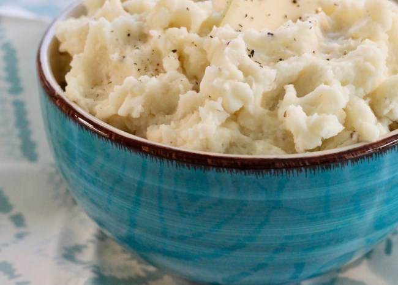

Mashed Potatoes

Description:
Description here....
Ingredients:
- Russet potatoes
- Butter
- Milk
- Salte and Pepper
Directions:
- Boil a pot of salted water. Cook potatoes for 15 min and drain.
- Heat butter and milk in a small pan on low heat.
- Mash cooked potatoes. Then, mix heated milk and butter with potatoes until desired texture is reached. Season to taste with salt and pepper.
Adapted fromAll Recipes